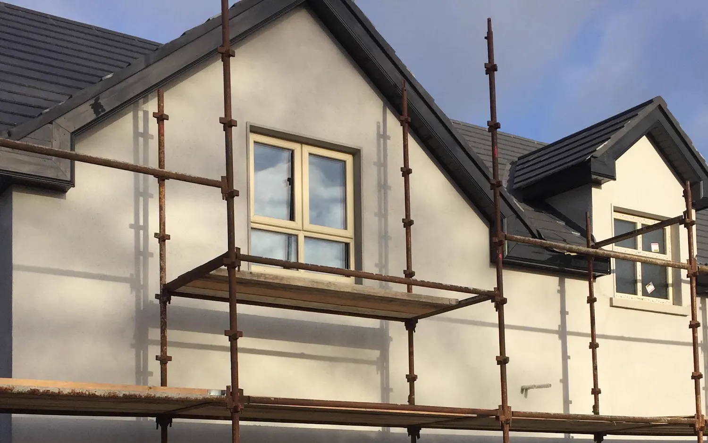
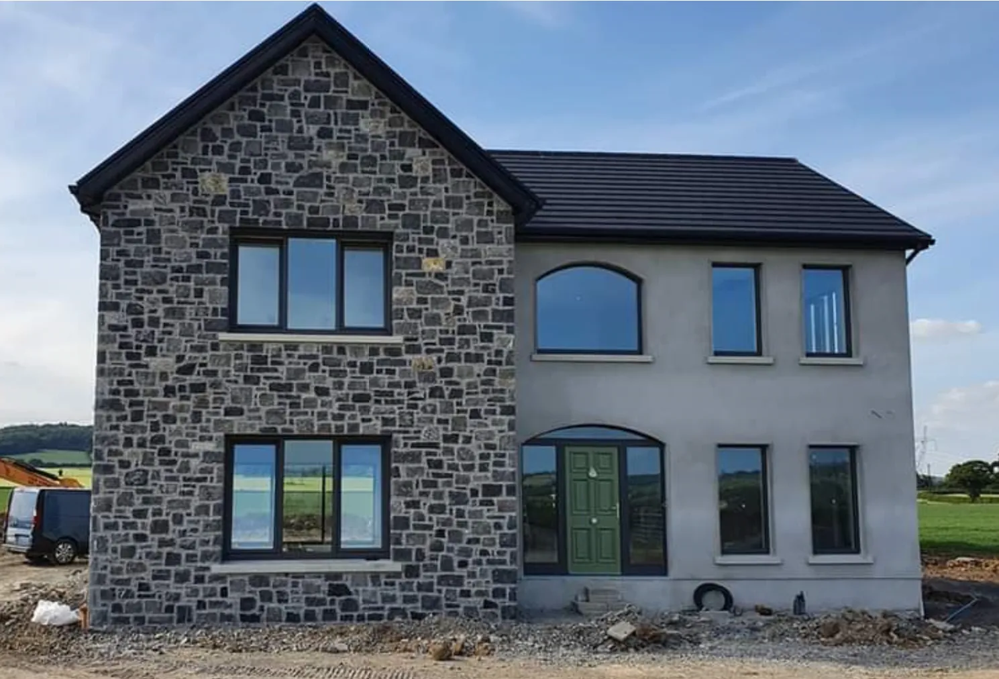
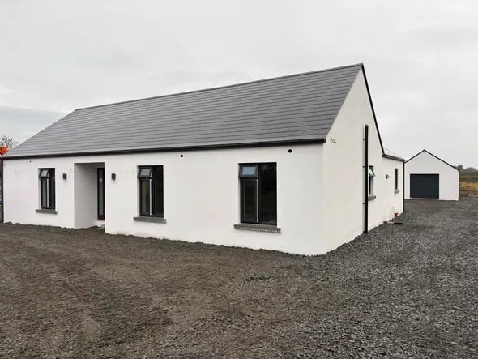
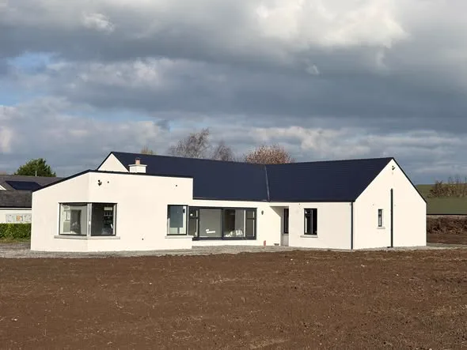
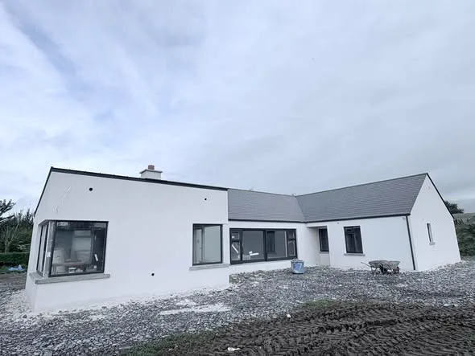
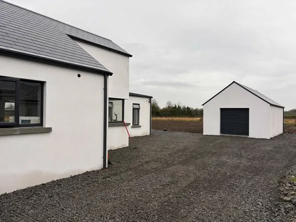
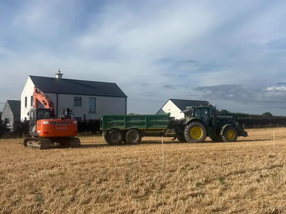
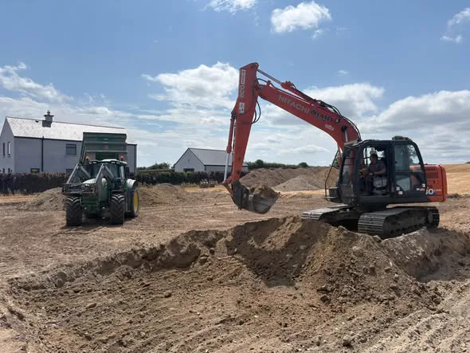
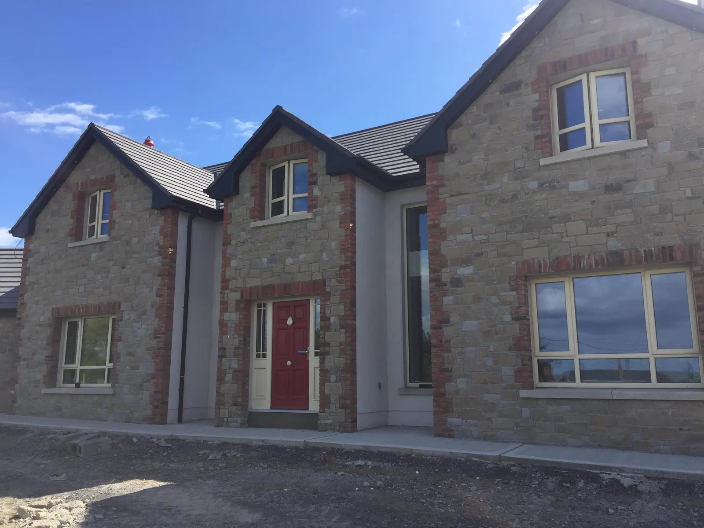

Building contractor in Co. Laois
John Frazer builds new homes and extensions around Portlaoise, with ground work, plastering and insurance claims. Rated 5.0 from 6 reviews on Google. Ring 087 236 7537.
Building services
The five trades on John's own list. Prices on request.
- New homesTwo-storey houses and bungalows, from the cleared site up.
- ExtensionsExtensions and renovations to a house you already own.
- Ground workSites cleared and dug out, ready for the build.
- PlasteringExternal plastering, smooth beside stone and brick.
- Insurance claimsBuilding work carried out under an insurance claim.

How a house goes up
-
House walls rendered, roof on
The blockwork is rendered and the roof is on while the scaffold still stands.

-
House windows, sills and paths
Sills, gutters and downpipes go on, and the paths are poured around the house.

-
Stone on the house gable
Limestone is laid across the gable, with arched windows set in the render beside it.

Recent houses and sites
A new home finished in November 2026, and ground work under way on the next.






Start and finish of a build
Drag across the picture: a site being dug out, and a house handed over. The photographs are from two separate posts on John's Facebook page.

Questions
Phone, email and location, then the things people ask first.
- Phone
- 087 236 7537
- Location
- Dysart, Portlaoise, Co. Laois
Get directions in Google Maps - Hours
- Listed on Google as open 24 hours. Ring to check.
How do I price a house build?
Ring John on 087 236 7537 and describe what you are planning.
What building work do you do?
New homes, extensions and renovations, ground work, plastering and insurance claims.
What are the opening hours?
Google lists the business as open 24 hours. Ring first to be sure John can take the call.
Where in Ireland are you?
Dysart, near Portlaoise in Co. Laois. A recent site was a new build in Mountmellick.
What do the 6 reviews say?
Six Google reviews, all five stars. They mention communication throughout the build.
Reviews on Google
Rated 5.0 from 6 reviews, quoted as they appear, with one comment from Facebook. Read all six reviews on Google
“I would highly recommend John Frazer. He is fantastic to deal with. Very professional service and communication throughout the build. He was extremely knowledgeable and was able to give us advice on different elements of the construction …”
- “Great staff with great skills.”Sean Cooney, Local Guide
- “Positive: Responsiveness, Quality, Professionalism, Value”Aoife Reams
- “Great work as always John”Shane N., comment on the Facebook page
